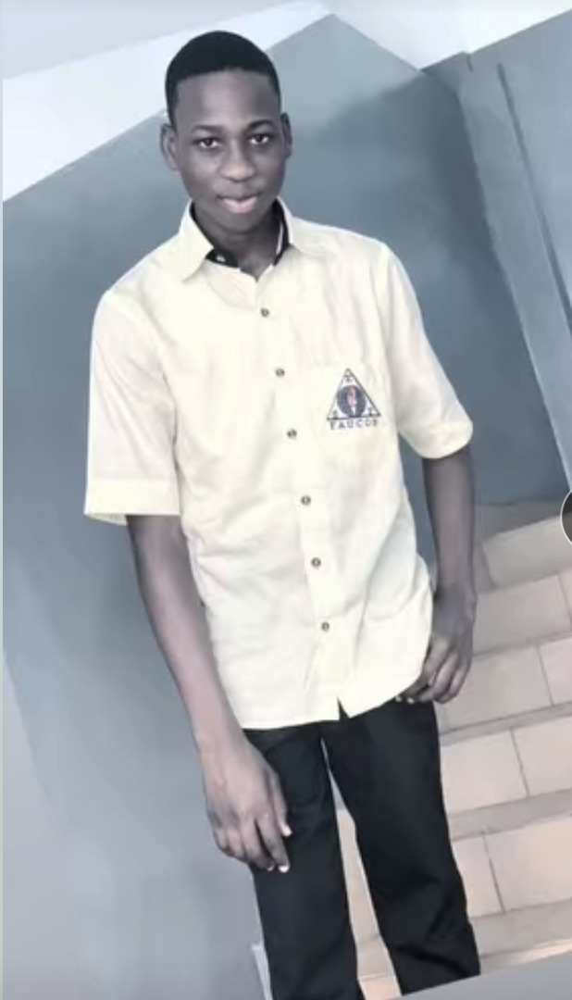

1.CEP
2.BEPC
3.BAC
Bonjour à tous,
Je m'appelle BOSSOU Fiacre et aujourd'hui,je veux vous parler de mon chemin.
Ma vie n'a pas toujours été facile, mais chaque épreuve m'a appris quelque
chose. J'ai compris que ce n'est pas la chance qui construit l'avenir,
mais le courage et le travail. Même quand je tombe, je me rélève, car
chaque échec est une leçon déguisée. Ma famille, mes amis et mes rêves me
poussent à avancer chaque jour. A l'école, j'ai trouvé des passions qui me donnent
envie d'aller plus loin. Je crois que chacun de nous a une force unique à offrir
au monde. Je suis encore en chemin, mais je suis fier de chaque pars.